power-electronics-buck-converters-what-is-a-buck-converter-and-concept / image_1
Buck converter power stage buck_power_stage_basic
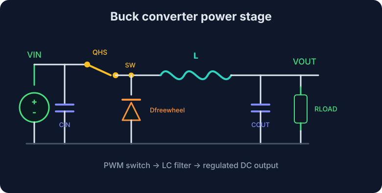
Prompt
A standard buck converter schematic. A DC source connects to a switch (FET), leading to a switching node. A diode connects from ground to the switching node (pointing up). An inductor connects the switching node to the output. A capacitor connects the output to ground, with a load resistor in parallel.
power-electronics-buck-converters-what-would-happen-to-a-buck-converte / image_1
Buck converter without an inductor buck_missing_inductor
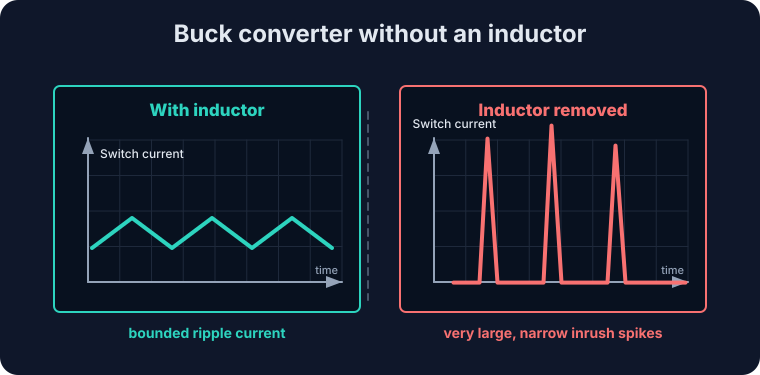
Prompt
A buck converter schematic with a large red 'X' drawn over the inductor. An arrow points from the switch directly to the capacitor with a label reading 'Massive Inrush Current / Short Circuit'.
power-electronics-buck-converters-what-would-happen-to-a-buck-converte-2 / image_1
Buck converter without a freewheeling diode buck_missing_diode
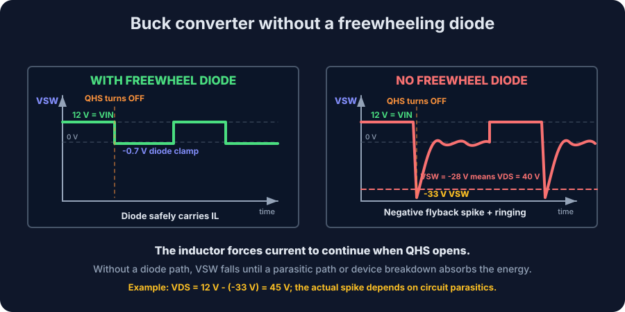
Prompt
Side-by-side switch-node voltage plots. With the diode, VSW alternates between 12 V and -0.7 V. Without the diode, VSW spikes to -33 V and rings, producing 45 V across the high-side MOSFET.
power-electronics-buck-converters-what-would-happen-to-a-buck-converte-3 / image_1
Buck converter without an output capacitor buck_missing_output_capacitor
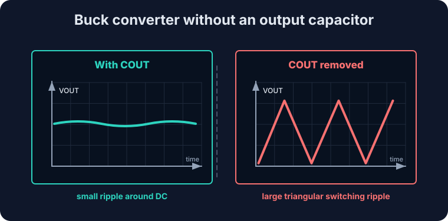
Prompt
A buck converter schematic with a large red 'X' over the output capacitor. Next to the load resistor, a graph shows a highly jagged triangle wave labeled 'Raw Ripple Voltage'.
power-electronics-buck-converters-what-would-happen-to-a-buck-converte-4 / image_1
Buck converter without an input capacitor buck_missing_input_capacitor
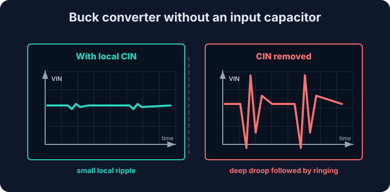
Prompt
A buck converter schematic with a large red 'X' over the input capacitor. A graph at the input line shows the V_in voltage dipping sharply and ringing every time the switch turns on.
power-electronics-buck-converters-draw-the-inductor-current-waveform-i / image_1
Buck gate and inductor current buck_gate_inductor_current
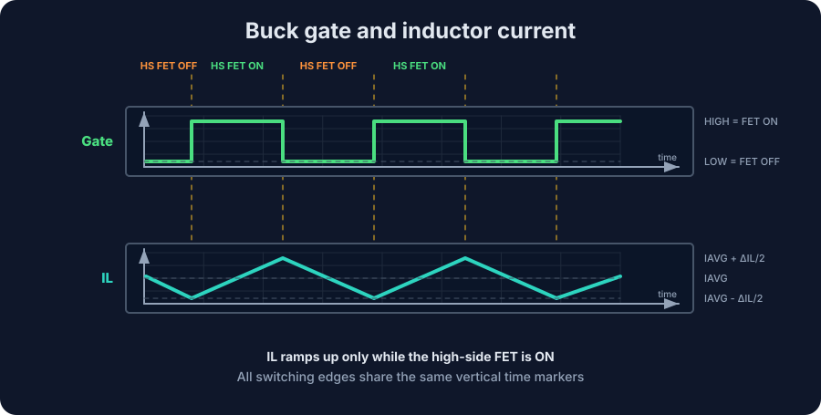
Prompt
Two stacked waveform graphs. Top: A square wave representing the MOSFET Gate Control Signal (HIGH / LOW). Bottom: The Inductor Current, showing a diagonal line ramping up exactly during the HIGH period, and ramping down exactly during the LOW period.
power-electronics-buck-converters-what-components-in-a-buck-converter / image_1
MOSFET switching loss buck_switching_loss
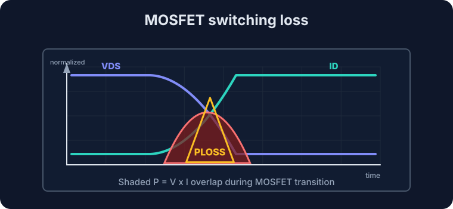
Prompt
A graph showing the V-I crossover during a MOSFET turn-on event. The Voltage trace drops diagonally, the Current trace rises diagonally, and a shaded bell-curve spike in the middle is labeled 'P = V*I (Switching Loss)'.
power-electronics-buck-converters-what-is-synchronous-rectification-in / image_1
Asynchronous vs synchronous buck buck_rectification_comparison
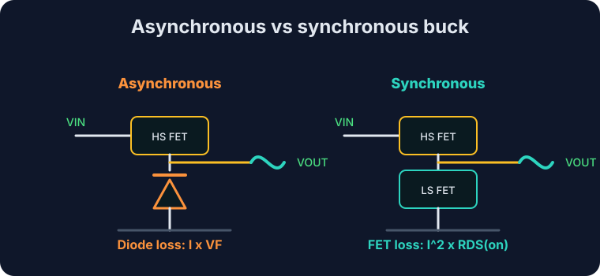
Prompt
A side-by-side comparison of two schematics. Left: An asynchronous buck converter (high-side FET, low-side diode). Right: A synchronous buck converter (high-side FET, low-side FET).
power-electronics-buck-converters-what-is-the-difference-between-conti / image_1
CCM vs DCM inductor current buck_ccm_dcm
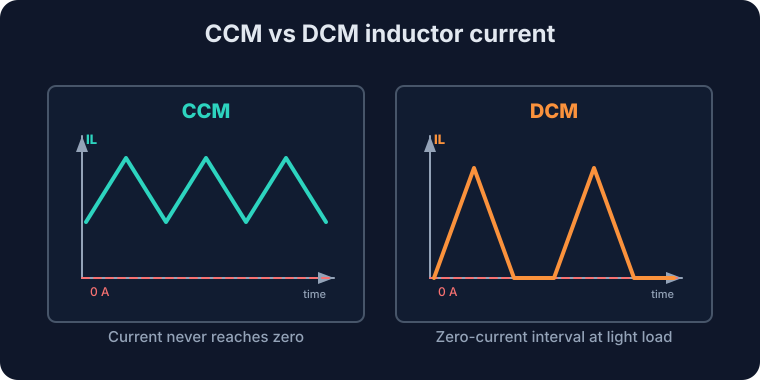
Prompt
Two inductor current waveforms side-by-side. Left (CCM): A triangle wave entirely above the 0A horizontal axis. Right (DCM): A triangle wave that ramps down, hits the 0A axis, stays flat at 0A for a short period, and then ramps back up.
power-electronics-buck-converters-draw-the-switch-node-voltage-wavefor / image_1
Buck switch-node voltage buck_switch_node_waveforms
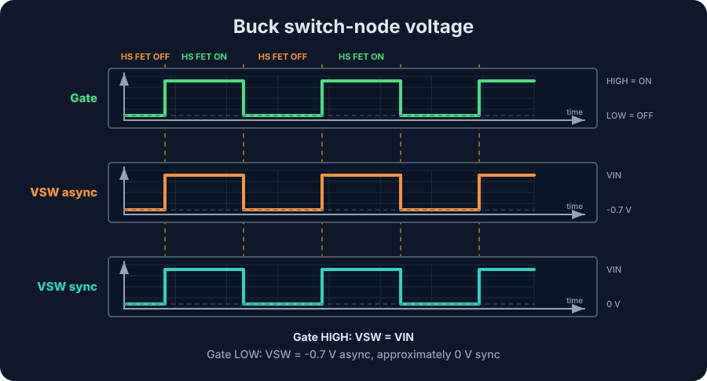
Prompt
Stacked graphs. Top: Gate Signal (square wave). Bottom: Switch Node Voltage, jumping up to V_in when the gate is HIGH, and dropping down to -0.7V when the gate is LOW (Async) or 0V (Sync).
power-electronics-buck-converters-draw-the-inductor-voltage-and-induct / image_1
Buck inductor voltage and current buck_inductor_waveforms
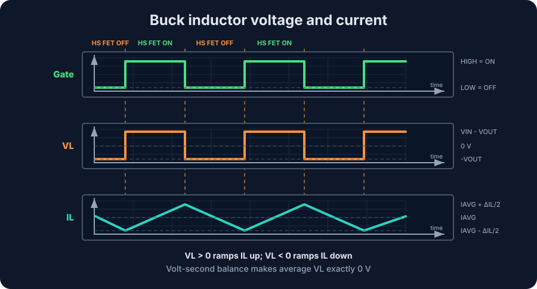
Prompt
Stacked graphs. Top: Gate Signal. Middle: Inductor Voltage (a positive flat line during ON, dropping to a negative flat line during OFF). Bottom: Inductor Current (ramping up diagonally during ON, ramping down diagonally during OFF).
power-electronics-buck-converters-draw-the-output-capacitor-current-an / image_1
Buck output capacitor waveforms buck_output_capacitor_waveforms
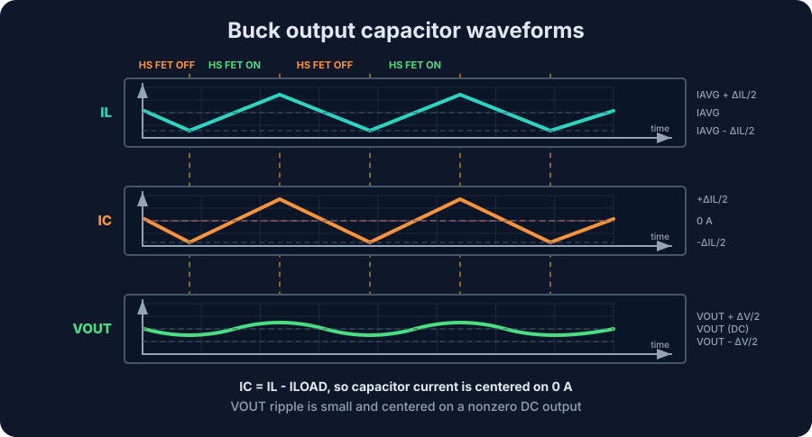
Prompt
Stacked graphs. Top: Inductor Current (triangle wave above 0A). Middle: Capacitor Current (the exact same triangle wave, but shifted down so it is centered at exactly 0A). Bottom: Capacitor Voltage (a flat DC line with a tiny parabolic ripple).
power-electronics-buck-converters-draw-the-diode-current-and-voltage-w / image_1
Asynchronous buck diode waveforms buck_diode_waveforms
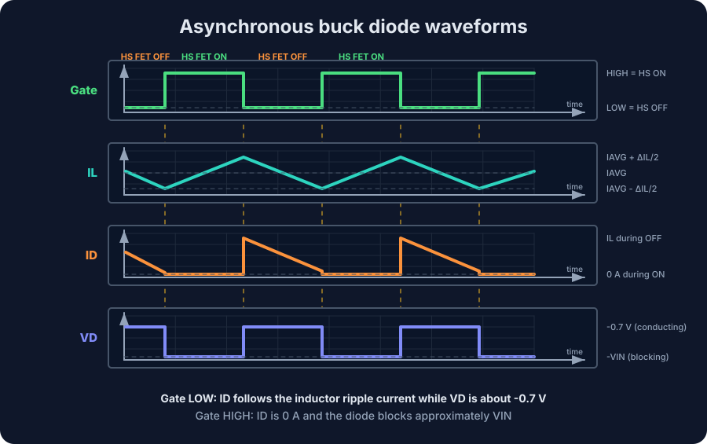
Prompt
Stacked graphs. Top: Gate Signal. Middle: Diode Current (0A during ON, instantly jumping up and ramping down diagonally during OFF). Bottom: Diode Voltage (A flat line at -V_in during ON, and -0.7V during OFF).
power-electronics-buck-converters-draw-the-input-supply-current-and-vo / image_1
Buck input waveforms buck_input_waveforms
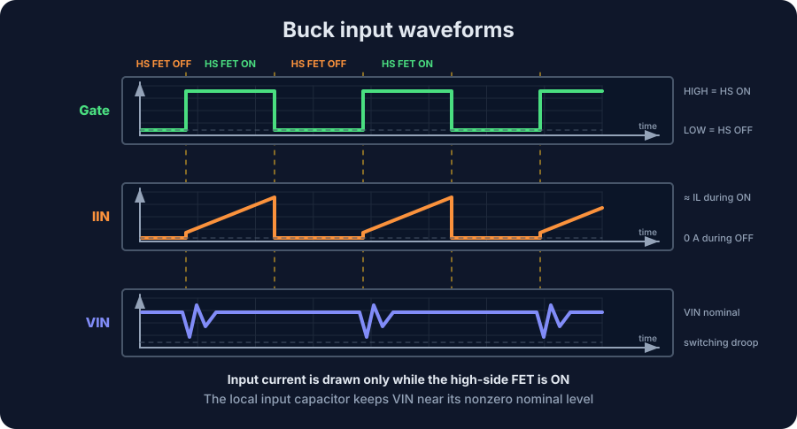
Prompt
Stacked graphs. Top: Gate Signal. Middle: Input Current (0A during OFF, jumping up to a sloped top during ON). Bottom: Input Voltage (a DC horizontal line that dips and rings sharply during the ON periods).
power-electronics-buck-converters-draw-the-output-load-voltage-and-cur / image_1
Buck output waveforms buck_load_waveforms
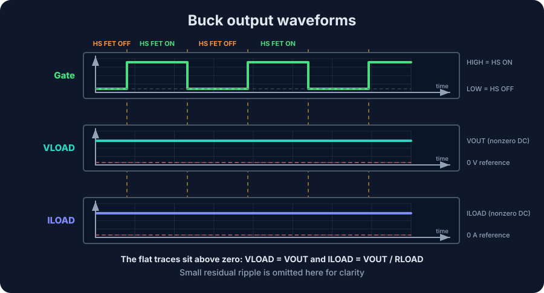
Prompt
Stacked graphs. Top: Gate Signal. Middle: Load Voltage (Flat horizontal line). Bottom: Load Current (Flat horizontal line).
power-electronics-buck-converters-draw-the-low-side-nfet-current-and-v / image_1
Synchronous buck low-side FET waveforms buck_low_side_fet_waveforms
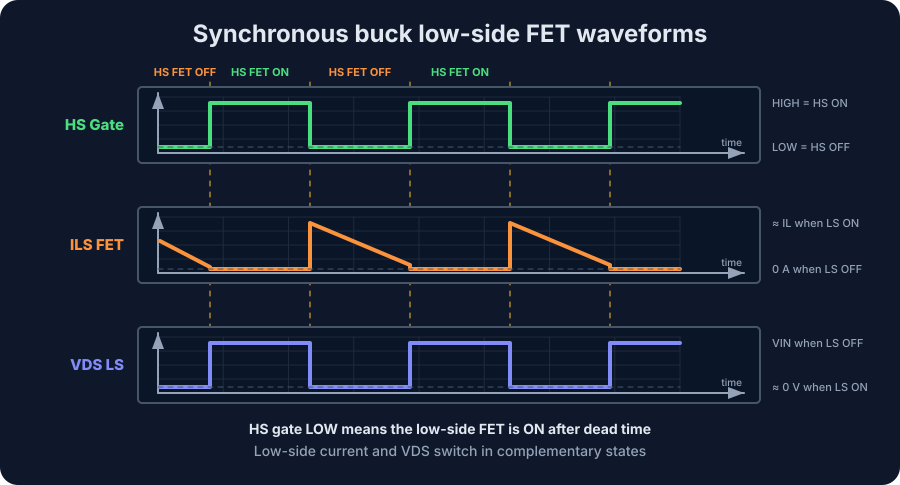
Prompt
Stacked graphs. Top: High-Side Gate Signal. Middle: Low-Side NFET Current (0A during ON, jumping up and ramping down diagonally during OFF). Bottom: Low-Side V_DS (V_in during ON, 0V during OFF).